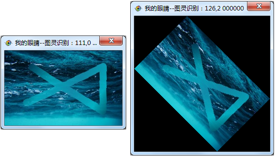

| 命令名称 | Filter_Rotate 固定旋转 |
| 命令功能 | (通用图像处理)按一定角度旋转图像 |
| 语法格式 | TURING.Filter_Rotate(angle) |
| 参数说明 | angle：整数型，旋转的正负度数值，正数顺时针（默认45，范围：正负0~360） |
| 返回值 | 无 |
| 按键精灵 |
复制代码
'获取图像数据 Call TURING.Pixel_FromScreen(0, 0, 500, 300) '按一定角度旋转图像 Call TURING.Filter_Rotate(45) '显示图像效果预览 Call TURING.Pixel_Preview() |
| 滤镜效果 |  |